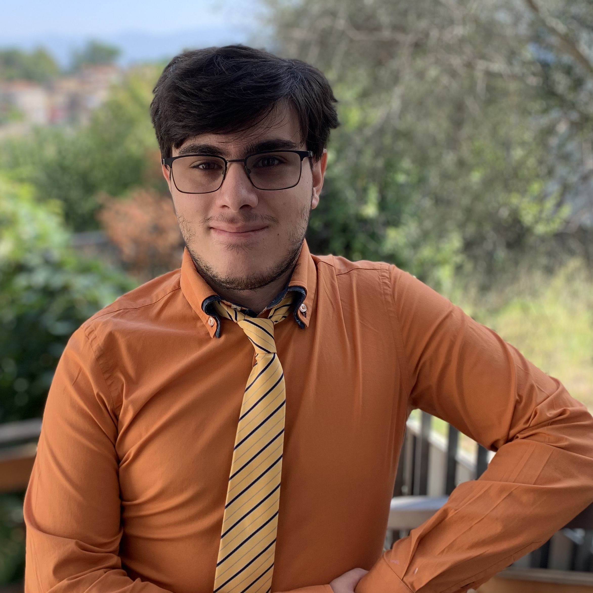

My Personal Life
I was born in Rome the 16th of August 2001, grew up in a small city close to Rome, called Riano. Since my early age, I had a strong attraction to science and Technology, so I started opening and "take apart" old PCs, and I was so amazed by that world.
Slowly but surely I kept using computers and phones more and more, curious to understand how they worked, until I reached the point where I am now.
